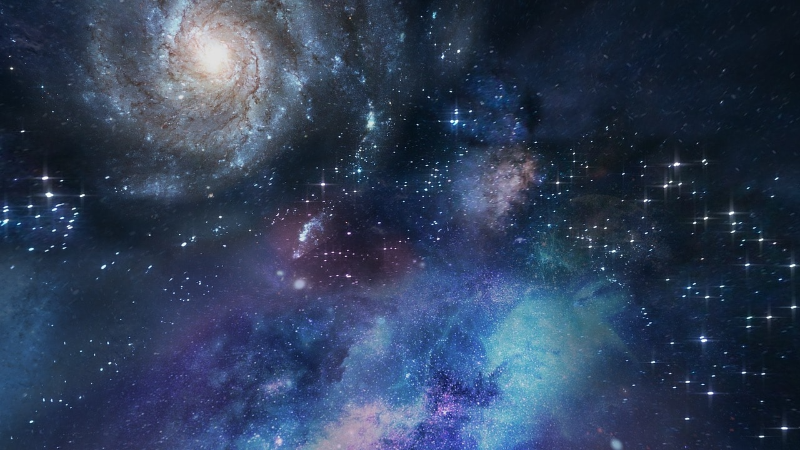
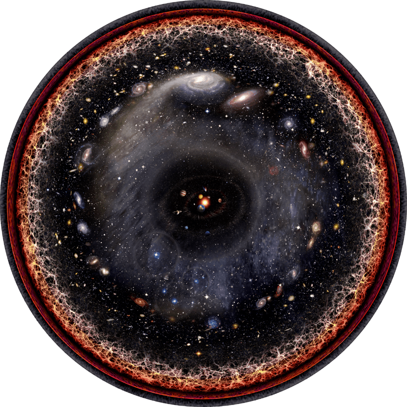
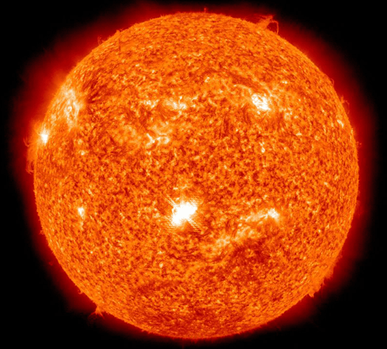
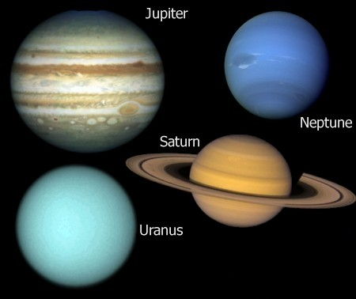
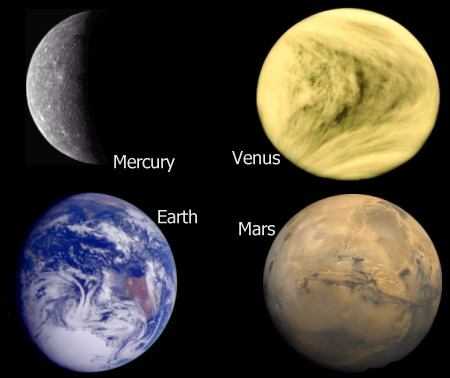

Het heelal is alles dat we kunnen aanraken, voelen, waarnemen, meten of detecteren. Het bestaat uit alle levende dingen, planeten, sterren, sterrenstelsels, stofwolken, licht en zelfs tijd. Voordat het heelal werd geboren bestonden tijd, ruimte en materie niet.

Niemand weet precies hoe groot het heelal is, omdat we de rand niet
kunnen zien als er al een rand is. We weten alleen dat het zichtbare
heelal minstens 93 miljard lichtjaar in diameter is. (Een lichtjaar is
de afstand die licht in een jaar aflegt ongeveer negen biljoen
kilometer.)
Het heelal is niet altijd even groot geweest. Wetenschappers denken dat
het is ontstaan in een Oerknal die bijna veertien miljard jaar geleden
plaatsvond. Sinds die tijd breidt het heelal zich met een enorme
snelheid uit. Het gebied van de ruimte dat we nu kunnen zien, is daarom
miljarden keren groter dan toen het heelal nog erg jong was.
De sterrenstelsels bewegen zich bovendien steeds verder van elkaar
terwijl de ruimte ertussen groter wordt. Omdat de ruimte tussen de
sterrenstelsels steeds sneller groeit, kan het heelal sneller “uit
elkaar gaan” dan het licht kan reizen. Daarom kunnen we de buitenste
rand van het heelal niet zien en zullen we die waarschijnlijk nooit
zien.

Sterren zijn gigantische, hete bollen van plasma, voornamelijk bestaande uit waterstof en helium, die door hun eigen zwaartekracht bijeen worden gehouden. Ze stralen enorme hoeveelheden licht en warmte uit, geproduceerd door kernfusie in hun kern. Sterren ontstaan uit sterrennevels, enorme wolken van gas en stof in de ruimte. Onze eigen zon is de dichtstbijzijnde ster van de miljoenen sterren in het heelal.

Planeten zijn grote hemellichamen die rond een ster draaien, zoals
de aarde rond de zon. Ze bestaan uit gas, gesteente of een
combinatie daarvan, en vormen zich uit kleinere bouwstenen in de
ruimte. Deze bouwstenen, ook wel planetesimalen genoemd, ontstaan
wanneer stofdeeltjes in een stervormingsschijf, een roterende schijf
van gas en stof rond een jonge ster tegen elkaar botsen en aan
elkaar blijven plakken. Wanneer een ster zich in de fase van de
vormingsschijf bevindt, ook wel de T Tauri-fase genoemd, stoot hij
extreem hete winden uit die voornamelijk bestaan uit positief
geladen deeltjes, zoals protonen en neutrale heliumatomen. Hoewel
een groot deel van het materiaal uit de schijf nog steeds op de ster
valt, klonteren kleine groepjes stofdeeltjes samen tot kiezels.
Kiezels vormen grotere rotsen, die door wrijving en de aanwezigheid
van gas aan elkaar blijven kleven. Sommige fragmenten breken af,
maar andere groeien uit tot steeds grotere objecten de voorlopers
van planeten.
Waar de schijf kouder is, ver genoeg van de ster verwijderd om water
te laten bevriezen, liften kleine ijsfragmenten mee met stof.
Vervuilde sneeuwballen kunnen zich ophopen tot gigantische
planetaire kernen. Deze koudere gebieden zorgen er ook voor dat
gasmoleculen voldoende vertragen om naar een planeet te worden
getrokken. Zo zouden Jupiter, Saturnus, Uranus en Neptunus, de
gasreuzen van ons zonnestelsel, zijn ontstaan.

In de warmere delen van de schijf, dichter bij de ster, beginnen rotsachtige planeten zich te vormen. Nadat de ijsreuzen zijn ontstaan, is er niet veel gas meer over voor de aardse planeten om te accretie. Planeten die rotsachtig zijn, zoals Mercurius, Venus, Aarde en Mars, kunnen tientallen miljoenen jaren nodig hebben om zich te vormen na de geboorte van de ster.
Het heelal wordt onderzocht door een wereldwijde gemeenschap van astronomen, astrofysici en ruimtevaartorganisaties, gebruikmakend van telescopen op aarde en in de ruimte.
Het heelal is het totaal van alles alle materie, energie, tijd en de ruimte zelf. De ruimte is specifiek het 'lege' vacuüm buiten de aardatmosfeer waarin sterren en planeten zich bevinden. Het heelal is dus het geheel, de ruimte is de inhoud.
{kind=link}